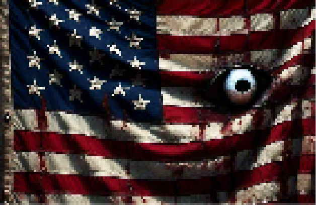
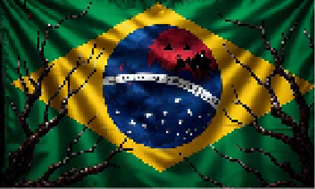

Halloween nos Estados Unidos

- Tradição forte desde 1800, trazida por imigrantes irlandeses e escoceses
- "Trick or treat" (Doces ou travessuras) é a atividade mais popular
- Fantasias elaboradas e decorações são comuns em casas e estabelecimentos
- Segunda maior festa comercial após o Natal, com grande impacto econômico
- Abóboras esculpidas (jack-o'-lanterns) são um símbolo icônico da festividade
- Filmes de terror e histórias de fantasmas são populares no mês de outubro
- Festas temáticas e casas mal-assombradas são atrações comuns
Halloween no Brasil

- Conhecido como "Dia das Bruxas", celebrado em 31 de outubro
- Celebração mais recente e menos expressiva comparada aos EUA
- Festas em escolas, clubes e shoppings são as principais formas de comemoração
- Crescimento entre o público jovem, especialmente em áreas urbanas
- Algumas cidades promovem o folclore brasileiro como alternativa
- Influência da cultura pop americana contribui para a popularização
- Coincide com o feriado de Finados (2 de novembro), gerando debates culturais
Charles ••• Guilherme ••• Gustavo ••• João Pedro ••• João Fernando ••• Yasmin